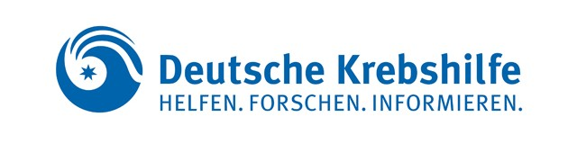
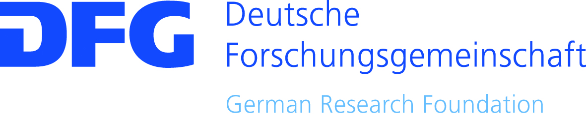
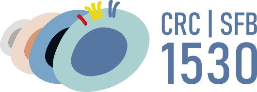
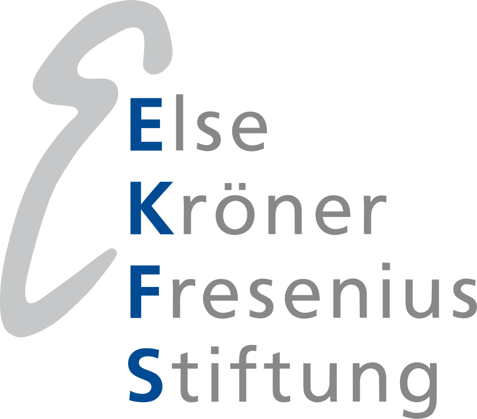
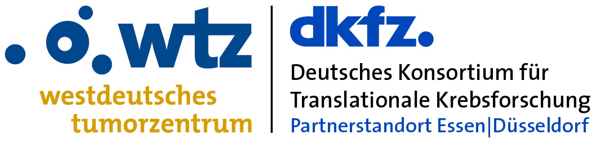

Lymphoma biology & heterogeneity
Investigating molecular differences between lymphomas through genomic profiling and computational analysis.
UNIVERSITY HOSPITAL ESSEN
Liquid biopsy and precision medicine in lymphoma.
We study lymphoma biology and develop circulating tumor DNA technologies to characterize disease, monitor treatment response, and investigate resistance.
Department of Hematology and
Stem Cell Transplantation · Essen, Germany
Investigating molecular differences between lymphomas through genomic profiling and computational analysis.
Developing sensitive approaches to characterize lymphoma and assess molecular changes during treatment.
Studying clonal evolution and mechanisms associated with treatment resistance using genomic analysis and functional models.
PUBLICATIONS
Roschewski et al.
Read publicationAlig*, Esfahani*, Garofalo*, Li* et al.
Read publicationTHE LAB
Our team combines clinical, experimental, and computational expertise in lymphoma research.
Meet the full teamFUNDING & RESEARCH NETWORKS





CONTACT
Interested in our research or potential research opportunities?
Contact Stefan Alig.